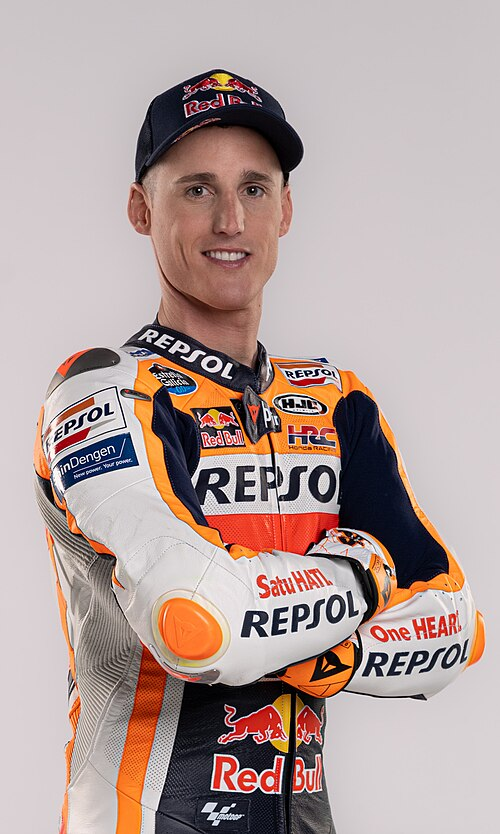

Pol Espargaro: risultati e statistiche MotoGP 2026

Foto: Box Repsol · CC BY 2.0, via Wikimedia Commons
Pol Espargaro corre in MotoGP con il numero 44 per Red Bull KTM Tech3 (KTM), nazionalità Spagna. Nel Mondiale 2026 è 25° con 5 punti e 0 vittorie.
Pol Espargaro è nato il 10 giugno 1991 a Granollers, Spain, ha debuttato nel Motomondiale nel 2006.
Risultati Pol Espargaro nel 2026
| Gran Premio | Sprint | Gara | Punti |
|---|---|---|---|
| GP Gran Bretagna | 18° | 13° | 3 |
| GP Aragona | 17° | 16° | 0 |
| GP San Marino | 16° | 14° | 2 |
| GP Austria | 14° | 16° | 0 |